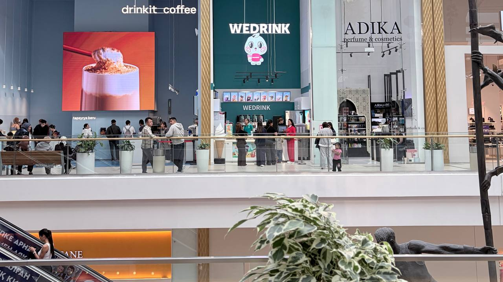

Fresh Drinks at MEGA Silk Way
Welcome to WEDRINK located in MEGA Silk Way Astana. We serve fresh fruit teas, milk teas, and ice cream daily using high-quality ingredients.
Address:
Kabanbay Batyr Ave 62, MEGA Silk Way, 2nd Floor, AstanaWelcome to WEDRINK located in MEGA Silk Way Astana. We serve fresh fruit teas, milk teas, and ice cream daily using high-quality ingredients.
Address:
Kabanbay Batyr Ave 62, MEGA Silk Way, 2nd Floor, Astana
— WEDRINK Brand Mission
Fresh ingredients and authentic bubble tea recipes for everyone.